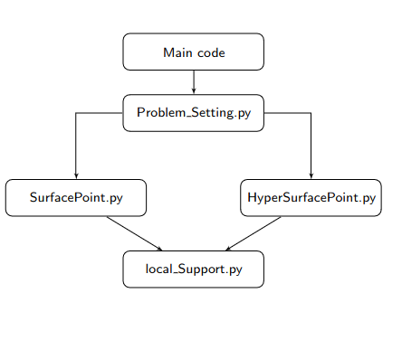
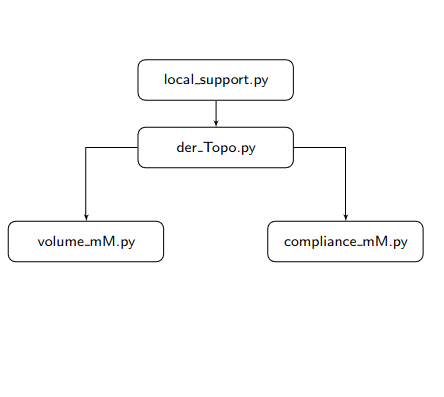
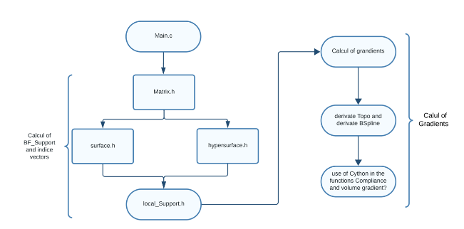
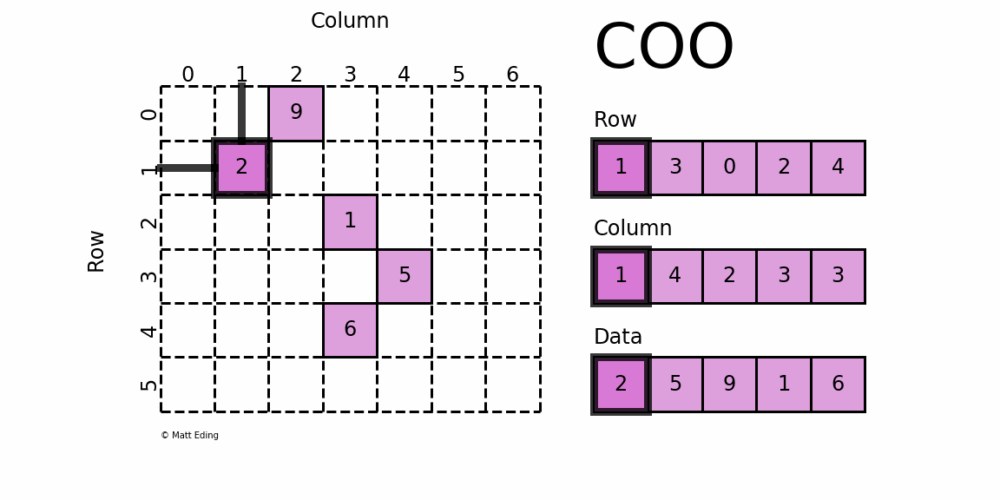

CODE IN PYTHON
The code we're working with is debased in Python. It consists of two parts, one for calculating Local support and the other for calculating Volume gradient and Compliance gradient.
 We therefore use this python code to define a C architecture.
CODE EN C
However, since Python and C are two quite distant and different languages, we have a few problems.
Problem
- No predifined structures for vectors , 2D/3D matrices or list vectors
- Big usage of memory space for large data structures (BF support = 5GB matrix)
Solutions
To solve these problems, we have
- creation of new data structures suitable for our problem
DATA STRUCTURE
Matrix
A data structure to represent a Matrix
typedef struct {
double *data;
int rows;
int cols;
int depth;
} Matrix;
Vector
A data structure to represent a Vector
typedef struct {
double *data;
int size;
} Vector;
List of Vector
A data structure to represent a list of vectors
typedef struct {
double *data;
int length;
} ListOfVector;
As matrices are extremely hollow in the Pyton code, we perform a COO stcokage in C to optimize the use of our memory, as follows:
COO Matrix
A data structure to represent stockage by COO
typedef struct {
double *values;
int *rowsIndices;
int *colsIndices;
int *depthsIndices;
int nonZeroCount;
int rows;
int cols;
int depth;
} COOMatrix;
The structures are all in place. Let's move on to the various tests carried out.